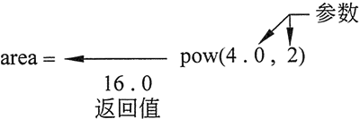
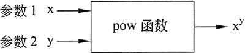
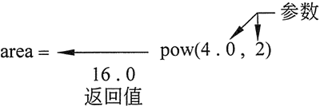
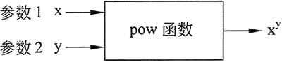

首页 > 编程笔记
C++ pow（指数函数）：求x的y次幂的值
与许多编程语言不同的是，C++ 没有指数运算符。计算数字的幂需要使用库函数。C++ 库包含一系列专门的函数，可以将库函数视为执行特定操作的“例程”。其中一个库函数叫作 pow，其目的就是计算数字的幂。
pow 函数用法示例：
pow 函数需要浮点参数。在某些 C++ 编译器上，整数参数也可以工作，但是许多编译器要求至少第一个参数是 double 类型的，本教程也遵守此约定。从该函数返回的值始终是 double 类型数字。在这种情况下，pow 将返回 16.0 并赋值给变量 area，如图 1 所示。

图 1 pow 函数的返回结果
语句

图 2 可以将 pow 函数理解为一个“黑箱”
使用 pow 函数时应遵循一些指导原则:
例如，在下面的语句中，变量 area 应该定义为 double 类型：
pow 函数用法示例：
area = pow(4.0,2);
该语句包含对 pow 函数的调用。括号内的数字是实参，也就是发送到函数的信息。pow 函数总是以第一个参数为底数，第二个参数为指数。在本示例中，4.0 是底数，2 是指数。结果从该函数返回，并在调用了该函数的语句中使用。pow 函数需要浮点参数。在某些 C++ 编译器上，整数参数也可以工作，但是许多编译器要求至少第一个参数是 double 类型的，本教程也遵守此约定。从该函数返回的值始终是 double 类型数字。在这种情况下，pow 将返回 16.0 并赋值给变量 area，如图 1 所示。

图 1 pow 函数的返回结果
语句
area = pow(4.0，2) 与以下代数表达式是等效的：Area = 42
以下是另外一个使用 pow 函数的示例，它将 3X63 的结果赋值给 x:x = 3 * pow(6.0, 3);
以下语句显示了底数为 5、指数为 4 的幂值：cout << pow(5.0, 4);
可以将 pow 函数视为一个“黑箱”，它接收 2 个数字，然后发送出第 3 个数字。发出来的数字是以第一个数字为底数、第二个数字为指数的幂值，如图 2 所示。
图 2 可以将 pow 函数理解为一个“黑箱”
使用 pow 函数时应遵循一些指导原则:
- 程序必须包含 cmath 头文件；
- 在传递给函数的两个参数中，至少第一个参数应该是 double 类型的，当然也可以两个都是；
- 因为 pow 函数返回一个 double 值，所以被赋值的任何变量也应该是 double 类型的；
例如，在下面的语句中，变量 area 应该定义为 double 类型：
area = pow(4.0, 2);
下面的程序解决了一个简单的代数问题。它要求用户输入圆的半径，然后计算圆的面积：// This program calculates the area of a circle. The formula for the area of a circle is PI times the radius squared. PI is 3.14159. #include <iostream> #include <cmath> // Needed for the pow function using namespace std; int main() { double area, radius; cout << "This program calculates the area of a circle. \n"; // Get the radius cout << "What is the radius of the circle? "; cin >> radius; // Compute and display the area area = 3.14159 * pow(radius, 2); cout << "The area is " << area << endl; return 0; }程序输出结果为：
This program calculates the area of a circle.
What is the radius of the circle? 10
The area is 314.159
area = 3.14159 * radius * radius;
当然，pow函数在涉及较大指数的运算中是很有用的。关注公众号「站长严长生」，在手机上阅读所有教程，随时随地都能学习。内含一款搜索神器，免费下载全网书籍和视频。

微信扫码关注公众号